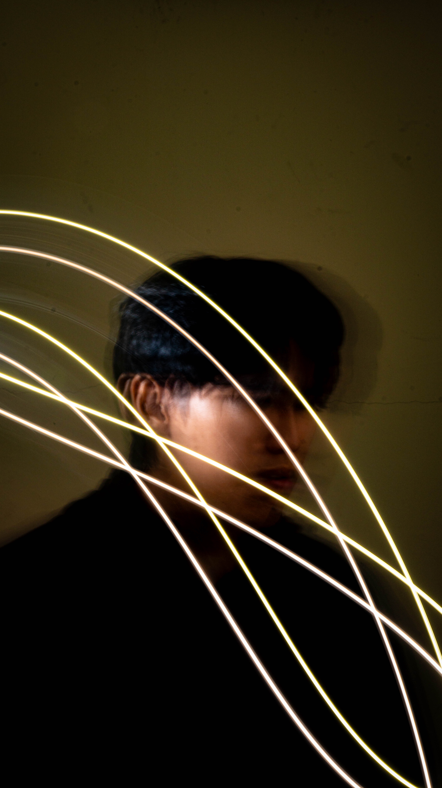
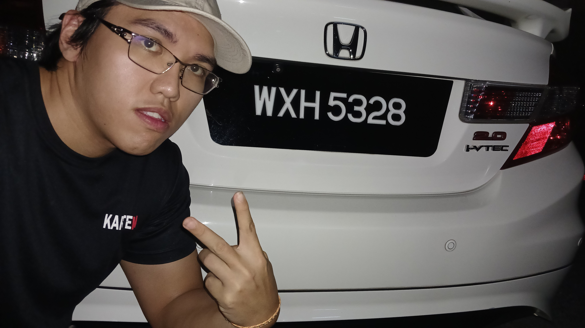

Hi, this is Alan
I'm a
I'm a web developer with a passion for creating dynamic and responsive websites.
I'm a web developer with a passion for creating dynamic and responsive websites.
|  |
About MeHello! I'm Alan Chan Soon On from Penang (Island), a passionate web developer with a love for creating dynamic and responsive websites. I enjoy learning new technologies and bringing creative ideas to life through code. My interests also include photography and content creation, which allow me to express my creativity in different ways. I am always eager to take on new challenges and grow both personally and professionally. |